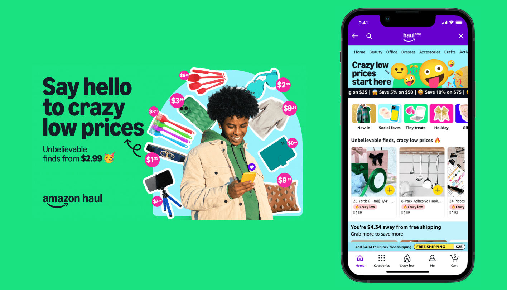
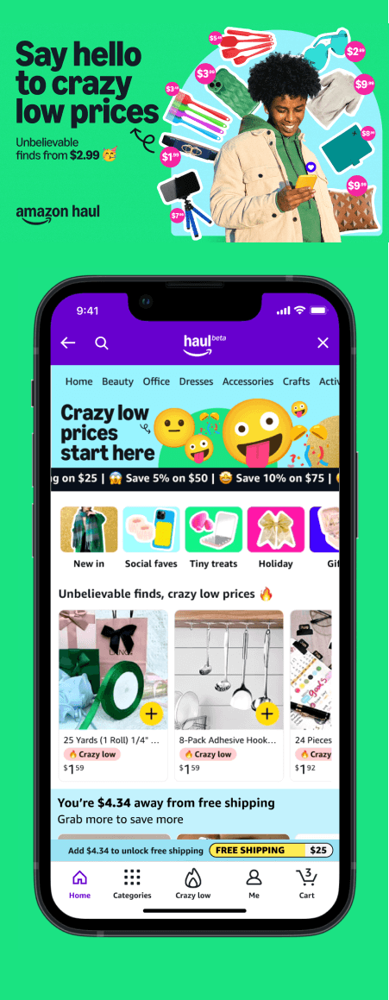
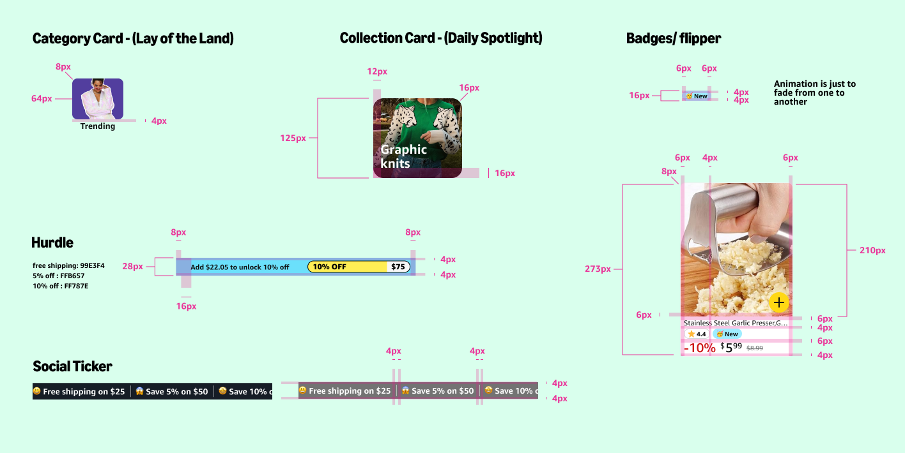
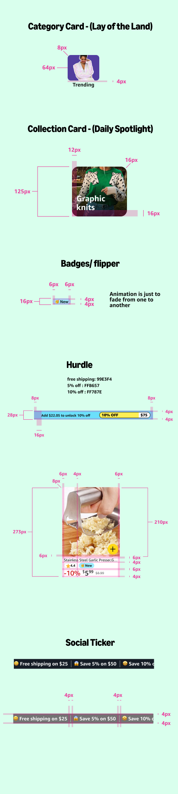
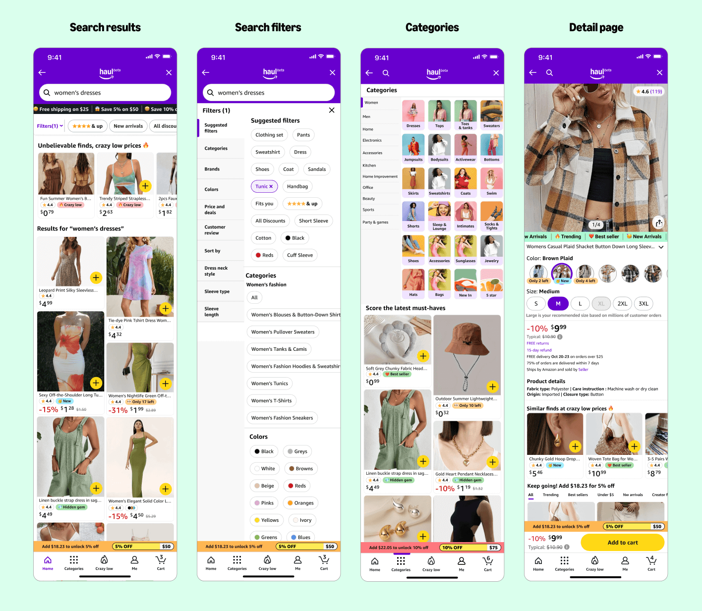
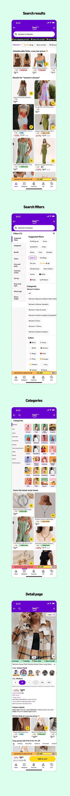
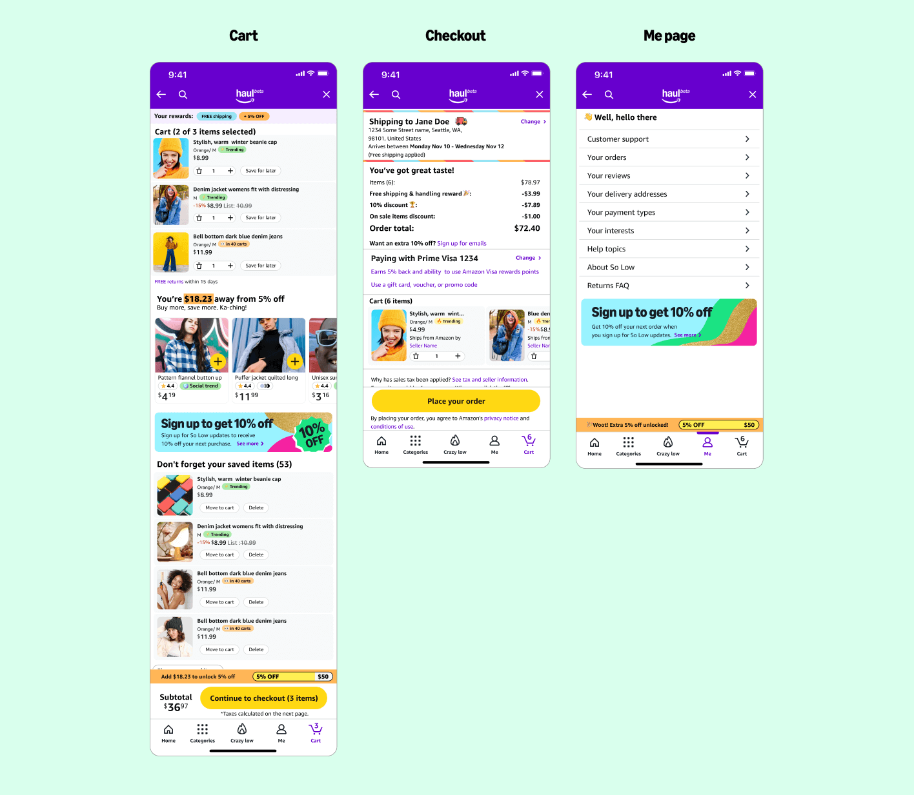
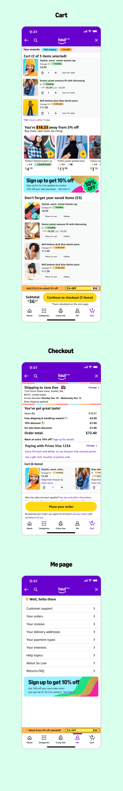

Amazon Haul
Lead UX Designer - 3/2024 - 7/2024
Project Overview
Amazon Haul is a low price, direct shipping from China marketplace aimed at the Gen Z demographic, focused on fun and quick shopping decisions with an emphasis on snappy motion and gamification.
Project Goal
Amazon Stores leadership challenged us to come up with an Amazonian response to the popularity of competitors such as Shein and Temu. We were told to imagine "Amazon in the upside down", and were challenged to break the rules early and often, with a focus on quick customer evaluation, limited time deals, and scarcity. Our goal was to stand up an entirely new marketplace in a 6 month window, and launch a direct competitor to the growing popularity of these other direct shipping from China stores.
View the live Haul store (mobile only)
Launch


Setting the stage
We knew a few things going in to this. First, we needed to craft a way to entice customers to reach shopping thresholds. Free shipping when you spend $25, 5% discount when you spend $50, 10% discount when you spend $75, and so on. We also knew that we would need to break the rules of Amazon's shopping design system Rio, while still maintaining an Amazon look and feel. We also knew we would need to introduce motion, and a brand system that would speak to the Gen Z target demographic.


Core shopping journey
We had to rethink the core shopping journey and all associated touchpoints through a "Haul" lens. With a focus on bold colors, motion, and content density, we re-configured the core Amazon shopping views to tailor towards our intended demographic. We leaned heavily into scarcity, and reward thresholds, enticing our customers to add more items to the cart. Taking into consideration concepts like timed and quantity discounts, with a focus on communicating a vast array of varied, inexpensive products.


Cart and checkout
Amazon has always been very customer obsessed when it comes to the purchasing experience. We strive to give clear and upfront information about the items in your cart, and we provide easy options to increase and decrease quantity, as well as suggested related items based on your shopping behaviors. On the checkout page, a detailed breakdown of the costs, and the time of delivery are a must in order to retain the trust we have built for the past 20+ years.
Taking this into account, we knew we had to retain that same level of customer trust and transparency, while again, rethinking these pages through a Haul lens. Motion, bold colors, social cues and scarcity were a must, while not degrading from the exisiting Amazon customer experience that everyone knows and loves.
Taking this into account, we knew we had to retain that same level of customer trust and transparency, while again, rethinking these pages through a Haul lens. Motion, bold colors, social cues and scarcity were a must, while not degrading from the exisiting Amazon customer experience that everyone knows and loves.


View the live Haul store (mobile only)
Launch